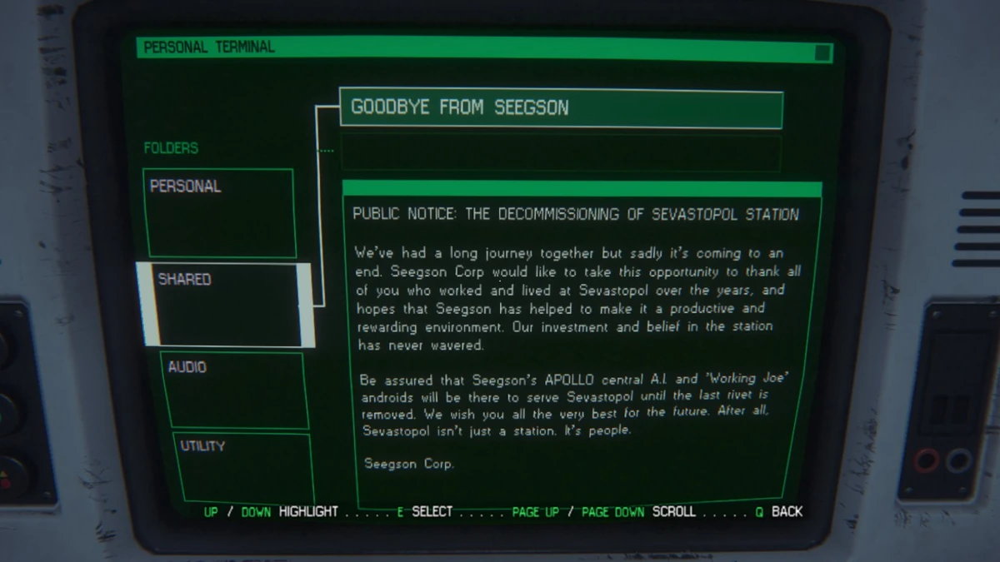
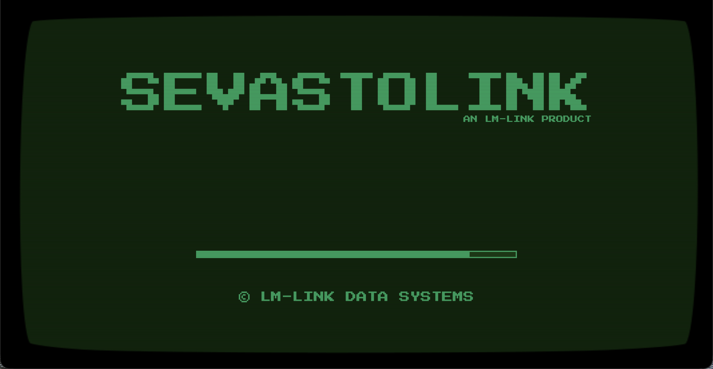
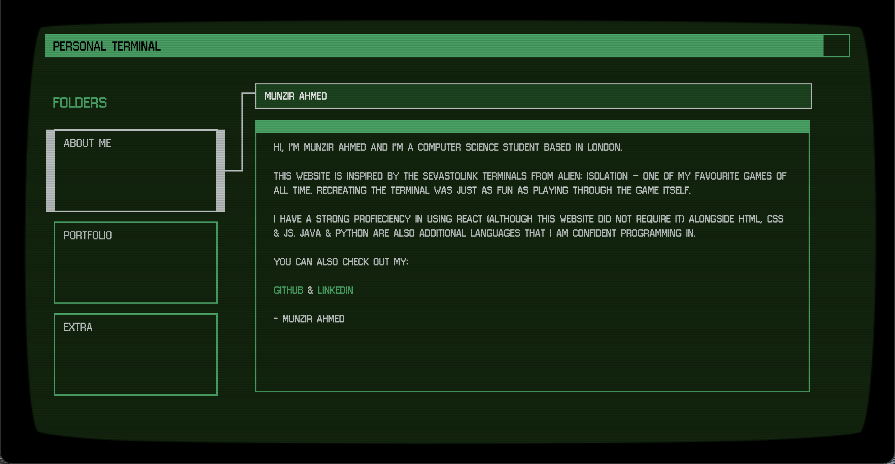
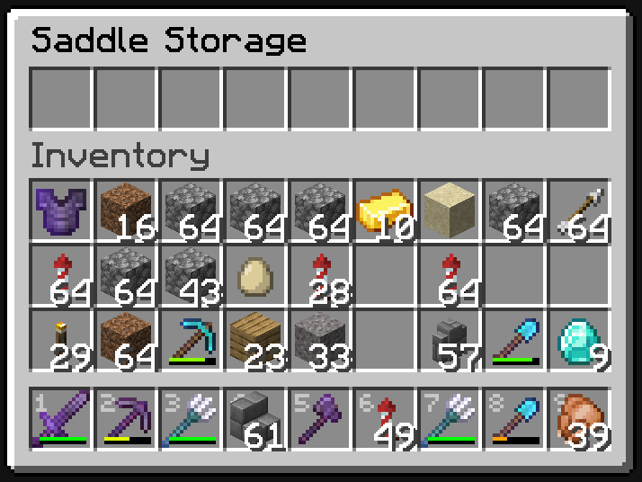
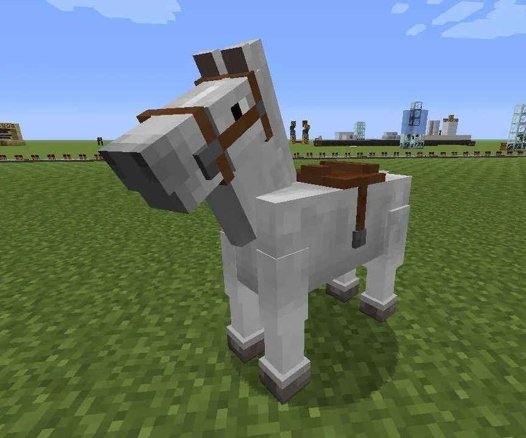

Sevastopol Terminal
14.02.26



A retro-style terminal interface built as my portfolio website. Inspired by the game Alien: Isolation.
Gym Management Database System
20.12.24


A fully designed and implemented relational database system for managing members, subscriptions, bookings and staff operations. Built as part of a university group project, the system includes entity-relationship modelling, normalization, constraints, and SQL queries.
HorseInventory 1.21
26.09.24


A plugin for 1.21 Minecraft written in Java. Adds a simple GUI for a horse inventory. Horse needs to be tamed and wearing a saddle for it to work.